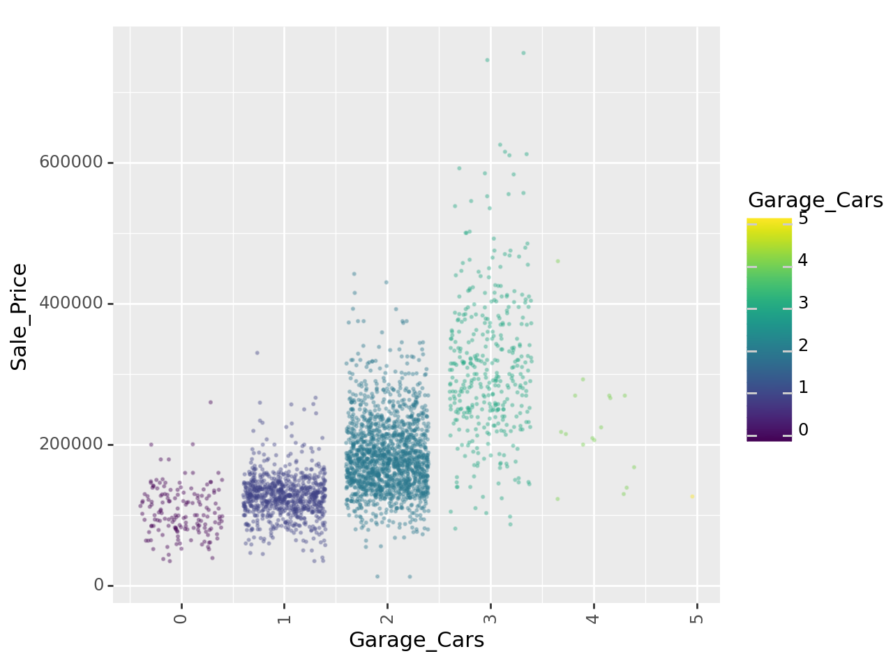

import pandas as pd
import numpy as np
import pickle
from siuba import *
import plydata as pr
from plydata.tidy import pivot_wider, pivot_longer
from plotnine import *
from mizani.formatters import comma_format, dollar_format
from plotnine.data import mpg
from mlxtend.feature_selection import ColumnSelector
from sklearn.compose import ColumnTransformer
from sklearn.preprocessing import StandardScaler, OneHotEncoder
from sklearn.linear_model import LinearRegression
from sklearn.pipeline import Pipeline
from sklearn.metrics import mean_absolute_error, mean_absolute_percentage_error
from sklearn.metrics import mean_squared_error, r2_score, make_scorer
from sklearn.model_selection import train_test_split, KFold, cross_val_score, cross_validate
from plydata.one_table_verbs import pull
from mizani.formatters import comma_format, dollar_format
import statsmodels.api as smproyecto_final_v1
Proyecto Análisis de la base ames.csv para predicción de precios de venta
1. Objetivo: Predicción de los precios de venta de hogares en Ames, Iowa.
El objetivo es desarrollar un modelo que prediga el precio de venta de una determinada casa en Ames, Iowa. Se asume, para este proyecto final de Introducción a la Ciencia de Datos, AMAT, que los interesados en el informe esperan conocer si el precio al que se ofrece una casa está por encima o por debajo de su valor real. Se espera que aquellas subvaluadas representen una oportunidad de inversión.
Para llevar a cabo una predicción del precio de venta, lo más precisa posible, es necesario aplicar las herramientas de Machine Learning que van desde el conocimiento del contenido, y contexto de la información, complementarla en caso necesario, hasta un análisis exploratorio (EDA y GEDA), desarrollo de hipótesis, implementación de algoritmos y modelos matemáticos.
Destacamos en el análisis exploratorio los siguientes puntos que deberemos alcanzar en este proyecto:
Maximizar el conocimiento de nuestro conjunto de datos (base ames.csv).
Descubrir la estructura subyacente de los datos.
Extraer variables importantes.
Detectar valores atípicos y anomalías.
Probar los supuestos subyacentes.
2. Contexto de los datos
La base de datos que se requiere se encuentra contenida en el archivo ames.csv. El presente proyecto desarrolla el modelo de predicción, fundamentado a su vez en predictores numéricos y categóricos correspondientes a diferentes características de las viviendas de Ames, Iowa.
El archivo ames.csv contiene 74 variables, como se indicó, tanto numéricas como categóricas, y 2,930 registros.
3. Descripción de las variables
| Variable | Descripción |
|---|---|
| MS_SubClass | Características de la vivienda |
| MS_Zoning | Zona en que se encuentra |
| Lot_Frontage | Medida del frente en pies |
| Lot_Area | Superficie en pies cuadrados |
| Street | Tipo de camino de acceso |
| Alley | Tipo de callejón |
| Lot_Shape | Forma de la vivienda |
| Land_Contour | Tipo de superficie |
| Utilities | Servicios disponibles |
| Lot_Config | Configuración de la vivienda |
| Land_Slope | Pendiente del terreno |
| Neighborhood | Barrio o colonia |
| Condition_1 | Vialidades adyacentes 1 |
| Condition_2 | Vialidades adyacentes 2 |
| Bldg_Type | Tipo de construcción |
| House_Style | Tipo de vivienda |
| Overall_Cond | Estado general |
| Year_Built | Año de construcción |
| Year_Remod_Add | Año de remodelación |
| Roof_Style | Tipo de techo |
| Roof_Matl | Material del techo |
| Exterior_1st | Tipo de fachada 1 |
| Exterior_2nd | Tipo de fachada 2 |
| Mas_Vnr_Type | Chapa mampostería tipo |
| Mas_Vnr_Area | Chapa mampostería área |
| Exter_Cond | Calidad de material exterior |
| Foundation | Tipo de cimientos |
| Bsmt_Cond | Estado del sótano |
| Bsmt_Exposure | Tipo de exposición del sótano |
| BsmtFin_Type_1 | Rating 1 de acabados del sótano |
| BsmtFin_SF_1 | Pies cuadrados del sótano tipo 1 |
| BsmtFin_Type_2 | Rating 2 de acabados del sótano |
| BsmtFin_SF_2 | Pies cuadrados del sótano tipo 2 |
| Bsmt_Unf_SF | Pies cuadrados sin acabados del sótano |
| Total_Bsmt_SF | Area del sótano en pies cuadrados |
| Heating | Tipo de calefacción |
| Heating_QC | Calidad y estado de la calefacción |
| Central_Air | Aire acondicionado central |
| Electrical | Sistema de electricidad |
| First_Flr_SF | Pies cuadrados del primer piso |
| Second_Flr_SF | Pies cuadrados del segundo piso |
| Gr_Liv_Area | Superficie habitable |
| Bsmt_Full_Bath | Baños completos en el sótano |
| Bsmt_Half_Bath | Medios baños en el sótano |
| Full_Bath | Baños completos |
| Half_Bath | Medios baños |
| Bedroom_AbvGr | Recámaras |
| Kitchen_AbvGr | Cocina |
| TotRms_AbvGrd | Recámaras |
| Functional | Características funcionales del hogar |
| Fireplaces | Chimeneas |
| Garage_Type | Tipo del garage |
| Garage_Finish | Acabado interior del garage |
| Garage_Cars | Espacio en el garage |
| Garage_Area | Área del garage en pies cuadrados |
| Garage_Cond | Estado del garage |
| Paved_Drive | Camino pavimentado |
| Wood_Deck_SF | Terraza de madera en pies cuadrados |
| Open_Porch_SF | Cobertizo abierto en pies cuadrados |
| Enclosed_Porch | Cobertizo cerrado en pies cuadrados |
| Three_season_porch | Cobertizo modalidad “tres temporadas” |
| Screen_Porch | Cobertizo con ventanales |
| Pool_Area | Superficie de la piscina |
| Pool_QC | Condiciones de la piscina |
| Fence | Calidad de la cerca |
| Misc_Feature | Misceláneos (elevador, cancha de tenis, etc.) |
| Misc_Val | Valor de misceláneos |
| Mo_Sold | Mes de venta |
| Year_Sold | Año de venta |
| Sale_Type | Forma de pago |
| Sale_Condition | Estado de la venta |
| Sale_Price | Precio de venta |
| Longitude | Longitud coordenada geográfica |
| Latitude | Latitud coordenada geográfica |
4. Exploración de datos
4.1 Librerías
#### lectura de archivo .csv ####
ames = pd.read_csv("data/ames.csv")
print("Tamaño de conjunto completo: ", ames.shape)Tamaño de conjunto completo: (2930, 74)4.2 Tipo de datos de cada una de las variables
# Información del tipo de datos de cada uno de los campos que integran la base
ames.info()<class 'pandas.core.frame.DataFrame'>
RangeIndex: 2930 entries, 0 to 2929
Data columns (total 74 columns):
# Column Non-Null Count Dtype
--- ------ -------------- -----
0 MS_SubClass 2930 non-null object
1 MS_Zoning 2930 non-null object
2 Lot_Frontage 2930 non-null int64
3 Lot_Area 2930 non-null int64
4 Street 2930 non-null object
5 Alley 2930 non-null object
6 Lot_Shape 2930 non-null object
7 Land_Contour 2930 non-null object
8 Utilities 2930 non-null object
9 Lot_Config 2930 non-null object
10 Land_Slope 2930 non-null object
11 Neighborhood 2930 non-null object
12 Condition_1 2930 non-null object
13 Condition_2 2930 non-null object
14 Bldg_Type 2930 non-null object
15 House_Style 2930 non-null object
16 Overall_Cond 2930 non-null object
17 Year_Built 2930 non-null int64
18 Year_Remod_Add 2930 non-null int64
19 Roof_Style 2930 non-null object
20 Roof_Matl 2930 non-null object
21 Exterior_1st 2930 non-null object
22 Exterior_2nd 2930 non-null object
23 Mas_Vnr_Type 1155 non-null object
24 Mas_Vnr_Area 2930 non-null int64
25 Exter_Cond 2930 non-null object
26 Foundation 2930 non-null object
27 Bsmt_Cond 2930 non-null object
28 Bsmt_Exposure 2930 non-null object
29 BsmtFin_Type_1 2930 non-null object
30 BsmtFin_SF_1 2930 non-null int64
31 BsmtFin_Type_2 2930 non-null object
32 BsmtFin_SF_2 2930 non-null int64
33 Bsmt_Unf_SF 2930 non-null int64
34 Total_Bsmt_SF 2930 non-null int64
35 Heating 2930 non-null object
36 Heating_QC 2930 non-null object
37 Central_Air 2930 non-null object
38 Electrical 2930 non-null object
39 First_Flr_SF 2930 non-null int64
40 Second_Flr_SF 2930 non-null int64
41 Gr_Liv_Area 2930 non-null int64
42 Bsmt_Full_Bath 2930 non-null int64
43 Bsmt_Half_Bath 2930 non-null int64
44 Full_Bath 2930 non-null int64
45 Half_Bath 2930 non-null int64
46 Bedroom_AbvGr 2930 non-null int64
47 Kitchen_AbvGr 2930 non-null int64
48 TotRms_AbvGrd 2930 non-null int64
49 Functional 2930 non-null object
50 Fireplaces 2930 non-null int64
51 Garage_Type 2930 non-null object
52 Garage_Finish 2930 non-null object
53 Garage_Cars 2930 non-null int64
54 Garage_Area 2930 non-null int64
55 Garage_Cond 2930 non-null object
56 Paved_Drive 2930 non-null object
57 Wood_Deck_SF 2930 non-null int64
58 Open_Porch_SF 2930 non-null int64
59 Enclosed_Porch 2930 non-null int64
60 Three_season_porch 2930 non-null int64
61 Screen_Porch 2930 non-null int64
62 Pool_Area 2930 non-null int64
63 Pool_QC 2930 non-null object
64 Fence 2930 non-null object
65 Misc_Feature 106 non-null object
66 Misc_Val 2930 non-null int64
67 Mo_Sold 2930 non-null int64
68 Year_Sold 2930 non-null int64
69 Sale_Type 2930 non-null object
70 Sale_Condition 2930 non-null object
71 Sale_Price 2930 non-null int64
72 Longitude 2930 non-null float64
73 Latitude 2930 non-null float64
dtypes: float64(2), int64(32), object(40)
memory usage: 1.7+ MB4.3. Variable numérica a predecir. Los estadísticos generales para Sale_Price son los siguientes:
(
ames >>
select(_.Sale_Price) >>
summarize(
Mean_Sale_Price = _.Sale_Price.mean().round(1),
Median_Sale_Price = _.Sale_Price.median().round(1),
Std_Sale_Price = _.Sale_Price.std().round(1),
Kurtosis_Sale_Price = _.Sale_Price.kurtosis().round(1),
)
)| Mean_Sale_Price | Median_Sale_Price | Std_Sale_Price | Kurtosis_Sale_Price | |
|---|---|---|---|---|
| 0 | 180796.1 | 160000.0 | 79886.7 | 5.1 |
(
ames >>
select(_.Sale_Price) >>
summarize(
Asimetria_Sale_Price = _.Sale_Price.skew().round(1),
Max_Sale_Price = _.Sale_Price.max().round(1),
Min_Sale_Price = _.Sale_Price.min().round(1),
)
)| Asimetria_Sale_Price | Max_Sale_Price | Min_Sale_Price | |
|---|---|---|---|
| 0 | 1.7 | 755000 | 12789 |
(
ames >>
select(_.Sale_Price) >>
summarize(
Q1_Sale_Price = _.Sale_Price.quantile(q = .25),
Q2_Sale_Price = _.Sale_Price.quantile(q = .5),
Q3_Sale_Price = _.Sale_Price.quantile(q = .75),
)
)| Q1_Sale_Price | Q2_Sale_Price | Q3_Sale_Price | |
|---|---|---|---|
| 0 | 129500.0 | 160000.0 | 213500.0 |
Se trata de una distribución de datos leptocúrtica (de forma puntiaguda) y la asimetría, que es positiva, indica que el gráfico tiene cola hacia la derecha. Los datos de bigotes los usaremos en el gráfico de caja (boxplot). Siendo la media mayor que la mediana, se infiere que los datos están sesgados positivamente debido a que hay valores muy altos que tiran o jalan la media hacia arriba.
# Histograma Sale_Price
(
ames >>
ggplot(aes(x = "Sale_Price")) +
geom_histogram(color = "pink", fill = "blue", bins=30) +
scale_x_continuous(labels=dollar_format()) +
scale_y_continuous(labels=comma_format()) +
ggtitle("Distribución de precio")
)<Figure Size: (640 x 480)>El gráfico de caja muestra un número importante de datos atípicos por encima de un precio de $338,931.00:
(
ames >>
ggplot() +
geom_boxplot(aes(x = 0, y = "Sale_Price"), color= "blue", fill= "lightblue") +
scale_y_continuous(labels = dollar_format(prefix='$', digits=0, big_mark=',')) +
theme(axis_text_x=element_blank()) +
ggtitle("Distribución de Precio de Venta")
)<Figure Size: (640 x 480)>4.3.1 Datos atípicos en la variable a predecir
Estableciendo como atípicos aquellos datos que están 1.5 veces el RIC por encima del cuartil 3, tenemos lo siguiente:
(
ames >>
filter( (_.Sale_Price > 339500) ) >>
select (_.Overall_Cond, _.Lot_Area, _.Neighborhood, _.Heating_QC, _.Sale_Price)
)| Overall_Cond | Lot_Area | Neighborhood | Heating_QC | Sale_Price | |
|---|---|---|---|---|---|
| 15 | Average | 53504 | Stone_Brook | Excellent | 538000 |
| 17 | Poor | 11394 | Stone_Brook | Excellent | 394432 |
| 36 | Average | 12858 | Northridge_Heights | Excellent | 376162 |
| 38 | Average | 10159 | Northridge_Heights | Excellent | 395192 |
| 44 | Average | 12919 | Northridge_Heights | Excellent | 611657 |
| ... | ... | ... | ... | ... | ... |
| 2666 | Excellent | 22950 | Old_Town | Excellent | 475000 |
| 2737 | Very_Good | 19800 | Edwards | Good | 415000 |
| 2883 | Average | 5748 | Crawford | Excellent | 375000 |
| 2901 | Average | 11443 | Timberland | Excellent | 369900 |
| 2902 | Average | 11577 | Timberland | Excellent | 359900 |
137 rows × 5 columns
De esos 137 registros, el 93% cuentan con sistema de aire acondicionado excelente.
(
ames >>
filter((_.Heating_QC == "Excellent") & (_.Sale_Price >= 339500)) >> select (_.Overall_Cond, _.Lot_Area, _.Neighborhood, _.Heating_QC, _.Sale_Price)
)| Overall_Cond | Lot_Area | Neighborhood | Heating_QC | Sale_Price | |
|---|---|---|---|---|---|
| 15 | Average | 53504 | Stone_Brook | Excellent | 538000 |
| 17 | Poor | 11394 | Stone_Brook | Excellent | 394432 |
| 36 | Average | 12858 | Northridge_Heights | Excellent | 376162 |
| 38 | Average | 10159 | Northridge_Heights | Excellent | 395192 |
| 44 | Average | 12919 | Northridge_Heights | Excellent | 611657 |
| ... | ... | ... | ... | ... | ... |
| 2461 | Average | 13162 | Somerset | Excellent | 405749 |
| 2666 | Excellent | 22950 | Old_Town | Excellent | 475000 |
| 2883 | Average | 5748 | Crawford | Excellent | 375000 |
| 2901 | Average | 11443 | Timberland | Excellent | 369900 |
| 2902 | Average | 11577 | Timberland | Excellent | 359900 |
128 rows × 5 columns
Por último, el mayor número de propiedades con precios más altos se concentra en los barrios Northridge, Northrige Heights y Stone Brook, que, como se verá más adelante, son los barrios “más caros”.
(
ames >>
filter((_.Heating_QC == "Excellent") & (_.Sale_Price >= 339500)) >>
select(_.Neighborhood) >> arrange(_.Neighborhood) >> count(_.Neighborhood)
)| Neighborhood | n | |
|---|---|---|
| 0 | College_Creek | 5 |
| 1 | Crawford | 3 |
| 2 | Gilbert | 1 |
| 3 | Northridge | 21 |
| 4 | Northridge_Heights | 60 |
| 5 | Old_Town | 1 |
| 6 | Somerset | 8 |
| 7 | Stone_Brook | 22 |
| 8 | Timberland | 7 |
4.4 Variable Coordenadas geográficas
Es importante destacar que dentro de las variables numéricas, con formato float (enteros y decimales), se encuentran los campos Latitude y Longitude, los cuales hacen referencia a las coordenadas geográficas exactas de cada inmueble que se pueden consultar en Google Maps.
Si consultamos la casa más barata, y la más cara en toda la base, tenemos las imágenes siguientes, obtenidas con base en sus coordenadas geográficas:
(
ames >> select(_.MS_SubClass, _.Overall_Cond, _.Latitude, _.Longitude, _.Sale_Price) >> filter((_.Sale_Price == _.Sale_Price.min()) | (_.Sale_Price == _.Sale_Price.max()))
)| MS_SubClass | Overall_Cond | Latitude | Longitude | Sale_Price | |
|---|---|---|---|---|---|
| 181 | One_Story_1945_and_Older | Poor | 42.030388 | -93.606789 | 12789 |
| 1767 | Two_Story_1946_and_Newer | Above_Average | 42.051980 | -93.657271 | 755000 |


Da click en las imágenes para dirigirte al inmueble correspondiente en Google Maps.
4.5 Análisis de correlaciones de variables numéricas
Se obtienen todas las correlaciones de todas las variables numéricas.
# Seleccionar solo las columnas numéricas
numeric_columns = ames.select_dtypes(include=[np.number])
# Calcular la matriz de correlación
correlation_matrix = numeric_columns.corr()
# Puedes imprimir la matriz de correlación completa
print(correlation_matrix) Lot_Frontage Lot_Area Year_Built Year_Remod_Add \
Lot_Frontage 1.000000 0.136862 0.026130 0.069509
Lot_Area 0.136862 1.000000 0.023258 0.021682
Year_Built 0.026130 0.023258 1.000000 0.612095
Year_Remod_Add 0.069509 0.021682 0.612095 1.000000
Mas_Vnr_Area 0.109858 0.125950 0.306797 0.191740
BsmtFin_SF_1 0.066707 -0.045760 -0.179373 -0.050840
BsmtFin_SF_2 -0.005254 0.083198 -0.027328 -0.061934
Bsmt_Unf_SF 0.139290 0.023883 0.129311 0.165397
Total_Bsmt_SF 0.206080 0.253765 0.407764 0.298393
First_Flr_SF 0.241707 0.332235 0.310463 0.242108
Second_Flr_SF -0.002813 0.032996 0.016828 0.158939
Gr_Liv_Area 0.186767 0.285599 0.241726 0.316855
Bsmt_Full_Bath 0.019554 0.124208 0.212119 0.134590
Bsmt_Half_Bath -0.031798 0.026448 -0.030515 -0.046175
Full_Bath 0.082826 0.127433 0.469406 0.457266
Half_Bath -0.029367 0.035497 0.269268 0.211771
Bedroom_AbvGr 0.112718 0.136569 -0.055093 -0.021536
Kitchen_AbvGr 0.022127 -0.020301 -0.137852 -0.142404
TotRms_AbvGrd 0.200488 0.216597 0.111919 0.197528
Fireplaces 0.051240 0.256989 0.170672 0.133322
Garage_Cars 0.142774 0.179456 0.537982 0.424416
Garage_Area 0.186780 0.212749 0.480726 0.375566
Wood_Deck_SF 0.001162 0.157212 0.228964 0.217857
Open_Porch_SF 0.085480 0.103760 0.198365 0.241748
Enclosed_Porch 0.024824 0.021868 -0.374364 -0.220383
Three_season_porch 0.004061 0.016243 0.015803 0.037412
Screen_Porch 0.045789 0.055044 -0.041436 -0.046888
Pool_Area 0.109439 0.093775 0.002213 -0.011410
Misc_Val 0.003098 0.069188 -0.011011 -0.003132
Mo_Sold 0.017357 0.003859 0.014577 0.018048
Year_Sold -0.011737 -0.023085 -0.013197 0.032652
Sale_Price 0.201875 0.266549 0.558426 0.532974
Longitude -0.022051 -0.098612 -0.425568 -0.323822
Latitude 0.046942 -0.036629 0.251397 0.181050
Mas_Vnr_Area BsmtFin_SF_1 BsmtFin_SF_2 Bsmt_Unf_SF \
Lot_Frontage 0.109858 0.066707 -0.005254 0.139290
Lot_Area 0.125950 -0.045760 0.083198 0.023883
Year_Built 0.306797 -0.179373 -0.027328 0.129311
Year_Remod_Add 0.191740 -0.050840 -0.061934 0.165397
Mas_Vnr_Area 1.000000 -0.107222 -0.014955 0.089662
BsmtFin_SF_1 -0.107222 1.000000 -0.121751 0.488014
BsmtFin_SF_2 -0.014955 -0.121751 1.000000 -0.238420
Bsmt_Unf_SF 0.089662 0.488014 -0.238420 1.000000
Total_Bsmt_SF 0.393530 -0.163311 0.090109 0.412248
First_Flr_SF 0.392280 -0.123074 0.084710 0.296139
Second_Flr_SF 0.120159 0.159652 -0.098188 0.002320
Gr_Liv_Area 0.400703 0.046419 -0.017996 0.235870
Bsmt_Full_Bath 0.139684 -0.473424 0.163634 -0.398629
Bsmt_Half_Bath 0.016609 -0.114581 0.099147 -0.105784
Full_Bath 0.254471 0.051531 -0.076262 0.274901
Half_Bath 0.188703 0.034869 -0.033004 -0.033530
Bedroom_AbvGr 0.080590 0.108739 -0.033033 0.188508
Kitchen_AbvGr -0.050733 0.103491 -0.037864 0.065651
TotRms_AbvGrd 0.278418 0.107549 -0.049288 0.251633
Fireplaces 0.270051 -0.143130 0.067180 0.001790
Garage_Cars 0.356831 -0.077813 -0.014118 0.180080
Garage_Area 0.370479 -0.096932 0.003625 0.164837
Wood_Deck_SF 0.165875 -0.146419 0.098591 -0.039285
Open_Porch_SF 0.140003 -0.002644 -0.005516 0.119143
Enclosed_Porch -0.109915 0.098732 0.032415 0.006383
Three_season_porch 0.014222 -0.048145 -0.023314 -0.005399
Screen_Porch 0.066817 -0.044111 0.062978 -0.047945
Pool_Area 0.004893 -0.025391 0.044403 -0.031963
Misc_Val 0.045276 -0.042043 -0.005195 -0.010125
Mo_Sold -0.002358 0.017495 -0.009401 0.021915
Year_Sold -0.016876 -0.035765 0.007089 -0.036443
Sale_Price 0.502196 -0.134905 0.006018 0.183308
Longitude -0.081546 0.061665 -0.025502 -0.048123
Latitude 0.216882 0.005937 -0.021714 0.161017
Total_Bsmt_SF First_Flr_SF ... Enclosed_Porch \
Lot_Frontage 0.206080 0.241707 ... 0.024824
Lot_Area 0.253765 0.332235 ... 0.021868
Year_Built 0.407764 0.310463 ... -0.374364
Year_Remod_Add 0.298393 0.242108 ... -0.220383
Mas_Vnr_Area 0.393530 0.392280 ... -0.109915
BsmtFin_SF_1 -0.163311 -0.123074 ... 0.098732
BsmtFin_SF_2 0.090109 0.084710 ... 0.032415
Bsmt_Unf_SF 0.412248 0.296139 ... 0.006383
Total_Bsmt_SF 1.000000 0.800429 ... -0.084848
First_Flr_SF 0.800429 1.000000 ... -0.065713
Second_Flr_SF -0.204487 -0.250057 ... 0.055429
Gr_Liv_Area 0.445108 0.562166 ... 0.004030
Bsmt_Full_Bath 0.326861 0.257836 ... -0.069014
Bsmt_Half_Bath 0.012850 0.010469 ... -0.009272
Full_Bath 0.325434 0.371584 ... -0.117795
Half_Bath -0.054557 -0.104203 ... -0.081312
Bedroom_AbvGr 0.052721 0.106648 ... 0.052115
Kitchen_AbvGr -0.038612 0.076025 ... 0.027911
TotRms_AbvGrd 0.281627 0.390162 ... 0.017221
Fireplaces 0.333467 0.406345 ... -0.000250
Garage_Cars 0.437856 0.439471 ... -0.134856
Garage_Area 0.485608 0.491208 ... -0.108237
Wood_Deck_SF 0.230290 0.227131 ... -0.119136
Open_Porch_SF 0.245941 0.238041 ... -0.059875
Enclosed_Porch -0.084848 -0.065713 ... 1.000000
Three_season_porch 0.037918 0.044061 ... -0.032674
Screen_Porch 0.075499 0.098316 ... -0.063965
Pool_Area 0.072109 0.121821 ... 0.092596
Misc_Val 0.083895 0.093003 ... 0.008773
Mo_Sold 0.017325 0.040496 ... -0.021324
Year_Sold -0.010524 -0.013667 ... -0.000505
Sale_Price 0.632529 0.621676 ... -0.128787
Longitude -0.161092 -0.135877 ... 0.140129
Latitude 0.175561 0.129733 ... -0.095854
Three_season_porch Screen_Porch Pool_Area Misc_Val \
Lot_Frontage 0.004061 0.045789 0.109439 0.003098
Lot_Area 0.016243 0.055044 0.093775 0.069188
Year_Built 0.015803 -0.041436 0.002213 -0.011011
Year_Remod_Add 0.037412 -0.046888 -0.011410 -0.003132
Mas_Vnr_Area 0.014222 0.066817 0.004893 0.045276
BsmtFin_SF_1 -0.048145 -0.044111 -0.025391 -0.042043
BsmtFin_SF_2 -0.023314 0.062978 0.044403 -0.005195
Bsmt_Unf_SF -0.005399 -0.047945 -0.031963 -0.010125
Total_Bsmt_SF 0.037918 0.075499 0.072109 0.083895
First_Flr_SF 0.044061 0.098316 0.121821 0.093003
Second_Flr_SF -0.032172 0.011741 0.044602 -0.005078
Gr_Liv_Area 0.006481 0.086804 0.135463 0.067252
Bsmt_Full_Bath 0.027086 0.052355 0.043730 -0.004817
Bsmt_Half_Bath 0.026971 0.042372 0.066911 0.036996
Full_Bath 0.015435 -0.015130 0.028205 -0.009771
Half_Bath -0.023231 0.035990 0.001515 0.026648
Bedroom_AbvGr -0.047151 0.009250 0.036707 0.000887
Kitchen_AbvGr -0.021379 -0.056337 -0.013066 0.025145
TotRms_AbvGrd -0.025097 0.033731 0.072103 0.061134
Fireplaces 0.018414 0.168004 0.098449 0.008192
Garage_Cars 0.023405 0.043198 0.030415 -0.016861
Garage_Area 0.029511 0.062598 0.053055 0.008526
Wood_Deck_SF -0.003967 -0.052191 0.094156 0.056820
Open_Porch_SF -0.009458 0.047548 0.064135 0.077254
Enclosed_Porch -0.032674 -0.063965 0.092596 0.008773
Three_season_porch 1.000000 -0.029430 -0.006501 -0.000753
Screen_Porch -0.029430 1.000000 0.026383 0.007162
Pool_Area -0.006501 0.026383 1.000000 0.011942
Misc_Val -0.000753 0.007162 0.011942 1.000000
Mo_Sold 0.027229 0.028169 -0.042223 0.007333
Year_Sold 0.022668 -0.006116 -0.052541 0.008574
Sale_Price 0.032225 0.112151 0.068403 -0.015691
Longitude 0.023723 0.048319 -0.001729 0.008715
Latitude 0.004271 0.018962 -0.013976 -0.011554
Mo_Sold Year_Sold Sale_Price Longitude Latitude
Lot_Frontage 0.017357 -0.011737 0.201875 -0.022051 0.046942
Lot_Area 0.003859 -0.023085 0.266549 -0.098612 -0.036629
Year_Built 0.014577 -0.013197 0.558426 -0.425568 0.251397
Year_Remod_Add 0.018048 0.032652 0.532974 -0.323822 0.181050
Mas_Vnr_Area -0.002358 -0.016876 0.502196 -0.081546 0.216882
BsmtFin_SF_1 0.017495 -0.035765 -0.134905 0.061665 0.005937
BsmtFin_SF_2 -0.009401 0.007089 0.006018 -0.025502 -0.021714
Bsmt_Unf_SF 0.021915 -0.036443 0.183308 -0.048123 0.161017
Total_Bsmt_SF 0.017325 -0.010524 0.632529 -0.161092 0.175561
First_Flr_SF 0.040496 -0.013667 0.621676 -0.135877 0.129733
Second_Flr_SF 0.013247 -0.018530 0.269373 -0.048694 0.097644
Gr_Liv_Area 0.043665 -0.026489 0.706780 -0.142516 0.179690
Bsmt_Full_Bath -0.003322 0.044805 0.275823 -0.114529 -0.015952
Bsmt_Half_Bath 0.022741 -0.019556 -0.035817 0.052260 -0.039032
Full_Bath 0.046032 -0.004754 0.545604 -0.228773 0.214763
Half_Bath -0.001311 0.001561 0.285056 -0.118501 0.167289
Bedroom_AbvGr 0.053677 -0.018008 0.143913 -0.038976 0.017599
Kitchen_AbvGr 0.035201 0.035421 -0.119814 0.067370 -0.074570
TotRms_AbvGrd 0.043784 -0.030498 0.495474 -0.086322 0.148099
Fireplaces 0.032152 -0.007612 0.474558 -0.057514 0.146768
Garage_Cars 0.050728 -0.021990 0.647562 -0.216828 0.260615
Garage_Area 0.040391 -0.012556 0.640138 -0.208203 0.211960
Wood_Deck_SF 0.016974 0.000882 0.327143 -0.144560 0.034529
Open_Porch_SF 0.033651 -0.037467 0.312951 -0.095491 0.087910
Enclosed_Porch -0.021324 -0.000505 -0.128787 0.140129 -0.095854
Three_season_porch 0.027229 0.022668 0.032225 0.023723 0.004271
Screen_Porch 0.028169 -0.006116 0.112151 0.048319 0.018962
Pool_Area -0.042223 -0.052541 0.068403 -0.001729 -0.013976
Misc_Val 0.007333 0.008574 -0.015691 0.008715 -0.011554
Mo_Sold 1.000000 -0.155554 0.035259 0.038735 0.043667
Year_Sold -0.155554 1.000000 -0.030569 0.003935 -0.011345
Sale_Price 0.035259 -0.030569 1.000000 -0.251397 0.290891
Longitude 0.038735 0.003935 -0.251397 1.000000 0.030089
Latitude 0.043667 -0.011345 0.290891 0.030089 1.000000
[34 rows x 34 columns]Revisado lo anterior, se consideran relevantes las correlaciones mayores o iguales a 0.5
numeric_columns = ames.select_dtypes(include=[np.number])
# Calcular las correlaciones entre todas las variables numéricas
correlation_matrix = numeric_columns.corr()
# Iterar a través de las correlaciones y mostrar las que son mayores o iguales a 0.5
for column1 in correlation_matrix.columns:
for column2 in correlation_matrix.columns:
correlation = correlation_matrix.loc[column1, column2]
if column1 != column2 and abs(correlation) >= 0.5:
print(f"Correlación entre {column1} y {column2}: {correlation}")Correlación entre Year_Built y Year_Remod_Add: 0.6120952503946816
Correlación entre Year_Built y Garage_Cars: 0.5379817054609293
Correlación entre Year_Built y Sale_Price: 0.5584261057120437
Correlación entre Year_Remod_Add y Year_Built: 0.6120952503946816
Correlación entre Year_Remod_Add y Sale_Price: 0.532973754026694
Correlación entre Mas_Vnr_Area y Sale_Price: 0.5021959770445465
Correlación entre Total_Bsmt_SF y First_Flr_SF: 0.8004286876684684
Correlación entre Total_Bsmt_SF y Sale_Price: 0.6325288490320315
Correlación entre First_Flr_SF y Total_Bsmt_SF: 0.8004286876684684
Correlación entre First_Flr_SF y Gr_Liv_Area: 0.562165842932009
Correlación entre First_Flr_SF y Sale_Price: 0.6216760632702522
Correlación entre Second_Flr_SF y Gr_Liv_Area: 0.6552511798220086
Correlación entre Second_Flr_SF y Half_Bath: 0.6116336701499726
Correlación entre Second_Flr_SF y Bedroom_AbvGr: 0.5046505900002038
Correlación entre Second_Flr_SF y TotRms_AbvGrd: 0.5852136527493758
Correlación entre Gr_Liv_Area y First_Flr_SF: 0.562165842932009
Correlación entre Gr_Liv_Area y Second_Flr_SF: 0.6552511798220086
Correlación entre Gr_Liv_Area y Full_Bath: 0.6303208098774116
Correlación entre Gr_Liv_Area y Bedroom_AbvGr: 0.5168075108650242
Correlación entre Gr_Liv_Area y TotRms_AbvGrd: 0.8077721448904711
Correlación entre Gr_Liv_Area y Sale_Price: 0.7067799209766268
Correlación entre Full_Bath y Gr_Liv_Area: 0.6303208098774116
Correlación entre Full_Bath y TotRms_AbvGrd: 0.5285991741538512
Correlación entre Full_Bath y Sale_Price: 0.5456039005201108
Correlación entre Half_Bath y Second_Flr_SF: 0.6116336701499726
Correlación entre Bedroom_AbvGr y Second_Flr_SF: 0.5046505900002038
Correlación entre Bedroom_AbvGr y Gr_Liv_Area: 0.5168075108650242
Correlación entre Bedroom_AbvGr y TotRms_AbvGrd: 0.6726471644586508
Correlación entre TotRms_AbvGrd y Second_Flr_SF: 0.5852136527493758
Correlación entre TotRms_AbvGrd y Gr_Liv_Area: 0.8077721448904711
Correlación entre TotRms_AbvGrd y Full_Bath: 0.5285991741538512
Correlación entre TotRms_AbvGrd y Bedroom_AbvGr: 0.6726471644586508
Correlación entre Garage_Cars y Year_Built: 0.5379817054609293
Correlación entre Garage_Cars y Garage_Area: 0.8898659902448479
Correlación entre Garage_Cars y Sale_Price: 0.6475616131207715
Correlación entre Garage_Area y Garage_Cars: 0.8898659902448479
Correlación entre Garage_Area y Sale_Price: 0.6401382984873729
Correlación entre Sale_Price y Year_Built: 0.5584261057120437
Correlación entre Sale_Price y Year_Remod_Add: 0.532973754026694
Correlación entre Sale_Price y Mas_Vnr_Area: 0.5021959770445465
Correlación entre Sale_Price y Total_Bsmt_SF: 0.6325288490320315
Correlación entre Sale_Price y First_Flr_SF: 0.6216760632702522
Correlación entre Sale_Price y Gr_Liv_Area: 0.7067799209766268
Correlación entre Sale_Price y Full_Bath: 0.5456039005201108
Correlación entre Sale_Price y Garage_Cars: 0.6475616131207715
Correlación entre Sale_Price y Garage_Area: 0.6401382984873729Del resultado anterior, 9 variables tienen una correlación mayor o igual a 0.5 con respecto al precio de ventas:
Gr_Liv_Area: 0.707
Garage_Cars: 0.648
Garage_Area: 0.640
Total_Bsmt_SF: 0.633
First_Flr_SF: 0.622
Year_Built: 0.558
Full_Bath: 0.546
Year_Remod_Add: 0.533
Mas_Vnr_Area: 0.502
Dada la similitud entre las variables Garage_Cars y Garace_Area, se considera sólo a la primera, que tiene un poco más de correlación.
Area (Lot_Area)
(
ames >> select(_.MS_SubClass, _.Overall_Cond, _.Lot_Area, _.Sale_Price) >> filter((_.Lot_Area == _.Lot_Area.min()) | (_.Lot_Area == _.Lot_Area.max()))
)| MS_SubClass | Overall_Cond | Lot_Area | Sale_Price | |
|---|---|---|---|---|
| 935 | Two_Story_PUD_1946_and_Newer | Above_Average | 1300 | 124000 |
| 956 | One_Story_1946_and_Newer_All_Styles | Average | 215245 | 375000 |
Los inmuebles en Ames, Iowa, van desde los 1,300 pies cuadrados (396 mts. cuadrados) hasta los 215,245 pies cuadrados (65,607 mts. cuadrados).
correlation = ames['Sale_Price'].corr(ames['Lot_Area'])
print(f'La correlación entre el tamaño de los lotes o área de las casas de Ames y su precio de venta es {correlation.round(2)}')
correlation.round(2)La correlación entre el tamaño de los lotes o área de las casas de Ames y su precio de venta es 0.270.27Lo anterior es indicativo de que hay una correlación débil que muestra que no es una variable que influye en el precio de venta.
(
ames >>
ggplot(aes(x = "Lot_Area", y = "Sale_Price")) +
geom_point()
)<Figure Size: (640 x 480)>Año de construcción / remodelación (Year_Built, Year_Remod_Add)
correlation = ames['Sale_Price'].corr(ames['Year_Remod_Add'])
print(f'La correlación entre el año de construcción / remodelación y su precio de venta es {correlation.round(2)}')
correlation.round(2)La correlación entre el año de construcción / remodelación y su precio de venta es 0.530.53De modo que se considera que hay una correlación moderada que indica que sí es una variable que influye en el precio de venta.
(
ames >>
ggplot(aes(x = "Year_Remod_Add", y = "Sale_Price")) +
geom_point()
)<Figure Size: (640 x 480)>Baños completos (Full_Bath)
correlation = ames['Sale_Price'].corr(ames['Full_Bath'])
print(f'La correlación entre el número de baños completos en las casas de Ames y su precio de venta es {correlation.round(2)}')
correlation.round(2)La correlación entre el número de baños completos en las casas de Ames y su precio de venta es 0.550.55Se considera que hay una correlación moderada que indica que sí es una variable que influye en el precio de venta.
(
ames >>
ggplot(aes(y = "Sale_Price", x = "Full_Bath", color = "Full_Bath")) +
geom_jitter(size = 0.3, alpha = 0.3) + theme(axis_text_x=element_text(angle=90))
)<Figure Size: (640 x 480)>Lugares de estacionamiento (Garage_Cars)
correlation = ames['Sale_Price'].corr(ames['Garage_Cars'])
print(f'La correlación entre el número de carros que caben en el garage de las casas de Ames y su precio de venta es {correlation.round(2)}')
correlation.round(2)La correlación entre el número de carros que caben en el garage de las casas de Ames y su precio de venta es 0.650.65Por consiguiente se considera que hay una correlación moderada que indica que sí es una variable que influye en el precio de venta.
(
ames >>
ggplot(aes(y = "Sale_Price", x = "Garage_Cars", color = "Garage_Cars")) +
geom_jitter(size = 0.3, alpha = 0.3) + theme(axis_text_x=element_text(angle=90))
)
<Figure Size: (640 x 480)>4.6 Variables categóricas
Las variables categóricas que se considera muestran relación con la variable a predecir Sale_Price son las siguientes:
Barrio (Neighborhood).
Estado general (Overall_Cond).
Tipo de casa (House_Style).
Aire acondicionado (Heating_QC).
Barrio (Neighborhood)
Existen 28 barrios; la mayoría de las casas se concentran en North Ames, College Creek, Old Town y Edwards (39%):
# Variables categóricas
ames['Neighborhood'].value_counts()Neighborhood
North_Ames 443
College_Creek 267
Old_Town 239
Edwards 194
Somerset 182
Northridge_Heights 166
Gilbert 165
Sawyer 151
Northwest_Ames 131
Sawyer_West 125
Mitchell 114
Brookside 108
Crawford 103
Iowa_DOT_and_Rail_Road 93
Timberland 72
Northridge 71
Stone_Brook 51
South_and_West_of_Iowa_State_University 48
Clear_Creek 44
Meadow_Village 37
Briardale 30
Bloomington_Heights 28
Veenker 24
Northpark_Villa 23
Blueste 10
Greens 8
Green_Hills 2
Landmark 1
Name: count, dtype: int64Los precios promedio por barrio nos indican que Northridge, Stone Brook y Northridge Heights son barrios cuyo promedio casi duplica el priomedio general de las casas en Ames.
# Precio de venta promedio por barrio
(
ames >>
group_by(_.Neighborhood) >>
summarize(Mean_Sale_Price = _.Sale_Price.mean().round(0) ) >>
arrange(-_.Mean_Sale_Price)
)| Neighborhood | Mean_Sale_Price | |
|---|---|---|
| 17 | Northridge | 330319.0 |
| 25 | Stone_Brook | 324229.0 |
| 18 | Northridge_Heights | 322018.0 |
| 9 | Green_Hills | 280000.0 |
| 27 | Veenker | 248315.0 |
| 26 | Timberland | 246600.0 |
| 23 | Somerset | 229707.0 |
| 4 | Clear_Creek | 208662.0 |
| 6 | Crawford | 207551.0 |
| 5 | College_Creek | 201803.0 |
| 0 | Bloomington_Heights | 196662.0 |
| 10 | Greens | 193531.0 |
| 8 | Gilbert | 190647.0 |
| 19 | Northwest_Ames | 188407.0 |
| 22 | Sawyer_West | 184070.0 |
| 14 | Mitchell | 162227.0 |
| 15 | North_Ames | 145097.0 |
| 1 | Blueste | 143590.0 |
| 16 | Northpark_Villa | 140711.0 |
| 12 | Landmark | 137000.0 |
| 21 | Sawyer | 136751.0 |
| 24 | South_and_West_of_Iowa_State_University | 135072.0 |
| 7 | Edwards | 130843.0 |
| 3 | Brookside | 124756.0 |
| 20 | Old_Town | 123992.0 |
| 2 | Briardale | 105608.0 |
| 11 | Iowa_DOT_and_Rail_Road | 103753.0 |
| 13 | Meadow_Village | 95756.0 |
Estado general (Overall_Cond)
Tabla de precios de venta por Estado general del inmueble, comparando las métricas básicas, en particular la relación media a mediana (sesgo).
(
ames >>
group_by(_.Overall_Cond) >>
summarize(Q1 = _.Sale_Price.quantile(q = .25), MEDIA = _.Sale_Price.mean().round(1), MEDIANA = _.Sale_Price.median().round(1), Q3 = _.Sale_Price.quantile(q = .75), STDEV = _.Sale_Price.std().round(1)) >>
mutate(SESGO = if_else(_.MEDIA > _.MEDIANA, "DERECHA", "IZQUIERDA"))
)| Overall_Cond | Q1 | MEDIA | MEDIANA | Q3 | STDEV | SESGO | |
|---|---|---|---|---|---|---|---|
| 0 | Above_Average | 123000.00 | 150377.9 | 142500.0 | 170000.0 | 50557.8 | DERECHA |
| 1 | Average | 145025.00 | 206027.0 | 187000.0 | 245262.5 | 87026.5 | DERECHA |
| 2 | Below_Average | 88000.00 | 120923.9 | 115000.0 | 146000.0 | 44730.4 | DERECHA |
| 3 | Excellent | 140000.00 | 199765.9 | 168000.0 | 263400.0 | 88072.4 | DERECHA |
| 4 | Fair | 67250.00 | 95994.0 | 84500.0 | 115050.0 | 38804.5 | DERECHA |
| 5 | Good | 122925.00 | 153002.0 | 139700.0 | 168500.0 | 49042.6 | DERECHA |
| 6 | Poor | 69375.00 | 116062.1 | 86000.0 | 111250.0 | 104754.0 | DERECHA |
| 7 | Very_Good | 126793.75 | 154775.5 | 141750.0 | 167125.0 | 51784.6 | DERECHA |
| 8 | Very_Poor | 58000.00 | 69981.3 | 62500.0 | 79184.5 | 20092.9 | DERECHA |
Hay inidicios de que el precio tiene relación directa con la condición general del inmueble.
(
ames >>
ggplot( aes( x = "Overall_Cond")) +
geom_bar( color= "darkblue", fill= "cyan", alpha= 0.7) +
scale_y_continuous(labels = comma_format()) +
ggtitle("Distribución de Condición General") +
theme_dark() +
theme(axis_text_x=element_text(angle=90))
)
<Figure Size: (640 x 480)>(
ames >>
ggplot(aes(y = "Sale_Price", x = "Overall_Cond", color = "Overall_Cond")) +
geom_jitter(size = 0.3, alpha = 0.3) + theme(axis_text_x=element_text(angle=90))
)<Figure Size: (640 x 480)>(
ames >>
ggplot(aes(y = "Sale_Price", x = "Overall_Cond", color = "Overall_Cond")) +
geom_boxplot(size=1, alpha= 0.3) + theme(axis_text_x=element_text(angle=90))
)
<Figure Size: (640 x 480)>(
ggplot(ames, aes(x = "Sale_Price", y = "Year_Remod_Add", color = "Overall_Cond")) +
geom_point() + geom_smooth(method = "lm") +
facet_wrap("Overall_Cond") + theme(axis_text_x=element_text(angle=90)
))<Figure Size: (640 x 480)>Tipo de casa (House_Style)
(
ames >>
ggplot(aes(y = "Sale_Price", x = "House_Style", color = "House_Style")) +
geom_jitter(size = 0.3, alpha = 0.3) + theme(axis_text_x=element_text(angle=90))
)
<Figure Size: (640 x 480)>El mayor número de registros se agrupa en las casas clásicas de uno y dos pisos.
Aire acondicionado (Heating_QC)
Como se indicó anteriormente en el análisis de datos atípicos en la base de datos, el aire acondicionado juega un papel importante.
El gráfico siguiente, muestra que los inmuebles con aire de típico a excelente, concentran la mayor cantidad de resultados.
Con base en consulta en Perplexity AI (es un motor de búsqueda basado en inteligencia artificial), los inviernos son muy fríos:
Durante el invierno, la temperatura máxima diaria promedio permanece alrededor de 2°C y está nublado o mayormente nublado aproximadamente el 54% del tiempo[2]. El mes de enero es el más frío, con una temperatura media de -7°C.
Enlace a Perplexity.ai consulta de temperatura en Ames, Iowa.
(
ames >>
ggplot(aes(y = "Sale_Price", x = "Heating_QC", color = "Heating_QC")) +
geom_jitter(size = 0.3, alpha = 0.3) + theme(axis_text_x=element_text(angle=90))
)<Figure Size: (640 x 480)>Las variables útiles para predecir el Precio de Venta de una determinada casa en Ames, Iowa son las siguientes:
Area del sótano en pies cuadrados (Total_Bsmt_SF).
Superficie habitable (Gr_Liv_Area).
Pies cuadrados del primer piso (First_Flr_SF).
Capacidad de autos en el garage (Garage_Cars).
Año de remodelación (Year_Remod_Add).
Barrio (Neighborhood).
Estado general (Overall_Cond).
Se considera importante desarrollar un modelo integral propio de la ciencia de datos para predecir mejor el precio de venta con base en éstas variables.
5. Modelo de regresión lineal múltiple
Como sabemos, dado que tenemos más de una variable independiente, en lugar de una recta, el modelo es un hiperplano que se ajusta a partir de las covariables explicativas:
\[X_1, X_2, X_3, ..., X_m\]
La regresión lineal múltiple permite generar un modelo en el que el valor de la variable dependiente o respuesta (Precio de Venta) se determina a partir de un conjunto de variables independientes llamadas predictores, que revisamos en nuestro EDA más un término de error.
\[Y = \beta _0+\beta _1 X_1 + ...+\beta _m X_m+\epsilon\] Y es la variable respuesta, X las variables explicativas y las betas son los coeficientes parciales de regresión.
Tanto en el análisis exploratorio, como en el diferencial, hemos cuidado mantener una objetividad y no caer en sesgos, para no forzar a encontrar lo que nos gustaría en los datos.
5.1 Condiciones para el ajuste de una regresión lineal:
Linealidad.
Distribución normal de los residuos. Ver un histograma de errores, normal centrada en cero.
Varianza de residuos constante (homocedasticidad).
Independencia. Que no exista correlación entre variables.
## Particionamos y extraemos la variable de respuesta
ames_y = ames >> pull("Sale_Price") # ames[["Sale_Price"]]
## Se seleccionan todos los demás datos en ames_x
ames_x = select(ames, -_.Sale_Price) # ames.drop('Sale_Price', axis=1)División de datos, tenemos conjuntos de test y train para x y y
ames_x_train, ames_x_test, ames_y_train, ames_y_test = train_test_split(
ames_x, ames_y,
test_size = 0.20,
random_state = 195
)5.2 Feature Engineering
Selección de variables
Seleccionamos las variables numéricas de interés, las que quiero incorporar a mi modelo
# Seleccionamos las variales numéricas de interés
num_cols = ["Total_Bsmt_SF", "Gr_Liv_Area", "Year_Remod_Add", "First_Flr_SF", "Garage_Cars"]
# Seleccionamos las variables categóricas de interés
cat_cols = ["Overall_Cond", "Neighborhood"] # R2 = 0.820
#cat_cols = ["Overall_Cond"] # R2 = .0751
#cat_cols = ["Neighborhood"] # R2 = 0.811
# Juntamos todas las variables de interés, numéricas y categóricas
columnas_seleccionadas = num_cols + cat_cols
pipe = ColumnSelector(columnas_seleccionadas)
# Arreglo con los valores que interesan:
ames_x_train_selected = pipe.fit_transform(ames_x_train)
# Recuperamos los nombres de las columnas
ames_train_selected = pd.DataFrame(
ames_x_train_selected,
columns = columnas_seleccionadas
)
print(ames_train_selected)
ames_train_selected.info() Total_Bsmt_SF Gr_Liv_Area Year_Remod_Add First_Flr_SF Garage_Cars \
0 625 1250 2007 625 2
1 1561 1561 2005 1561 2
2 533 1775 1964 1131 2
3 631 1112 1951 1112 2
4 1161 1381 2006 1381 2
... ... ... ... ... ...
2339 546 1092 1970 546 0
2340 1760 1760 2004 1760 2
2341 768 789 1950 789 1
2342 970 2393 1999 1469 2
2343 662 2337 1950 1422 2
Overall_Cond Neighborhood
0 Average Somerset
1 Average Northridge_Heights
2 Average North_Ames
3 Average North_Ames
4 Good Northwest_Ames
... ... ...
2339 Below_Average Meadow_Village
2340 Average Northridge_Heights
2341 Average Crawford
2342 Average Somerset
2343 Average Old_Town
[2344 rows x 7 columns]
<class 'pandas.core.frame.DataFrame'>
RangeIndex: 2344 entries, 0 to 2343
Data columns (total 7 columns):
# Column Non-Null Count Dtype
--- ------ -------------- -----
0 Total_Bsmt_SF 2344 non-null object
1 Gr_Liv_Area 2344 non-null object
2 Year_Remod_Add 2344 non-null object
3 First_Flr_SF 2344 non-null object
4 Garage_Cars 2344 non-null object
5 Overall_Cond 2344 non-null object
6 Neighborhood 2344 non-null object
dtypes: object(7)
memory usage: 128.3+ KBLa selección de las variables categóricas Overall_Cond o Neighborhood, por sí solas, proporcionan una r2 de 0.751 y 0.811, respectivamente, razón por la cual se seleccionan juntas, ya que entregan una métrica de desempeño un poco mejor, de 0.820.
5.4 Transformación de columnas
Estandarizamos las variables numéricas Procesamos las columnas categóricas Impedimos que en el nombre combine el método y la variable Pedimos que lo demás permanezca sin cambios
# ColumnTransformer para aplicar transformaciones
preprocessor = ColumnTransformer(
transformers = [
('scaler', StandardScaler(), num_cols),
('onehotencoding', OneHotEncoder(drop='first', sparse_output=False), cat_cols)
],
verbose_feature_names_out = False,
remainder = 'passthrough' # Mantener las columnas restantes sin cambios
)
transformed_data = preprocessor.fit_transform(ames_train_selected)
new_column_names = preprocessor.get_feature_names_out()
transformed_df = pd.DataFrame(
transformed_data,
columns=new_column_names
)
print(transformed_df)
transformed_df.info() Total_Bsmt_SF Gr_Liv_Area Year_Remod_Add First_Flr_SF Garage_Cars \
0 -0.981450 -0.489850 1.084460 -1.365036 0.308118
1 1.177934 0.125086 0.988539 1.019965 0.308118
2 -1.193697 0.548225 -0.977858 -0.075709 0.308118
3 -0.967608 -0.762715 -1.601350 -0.124122 0.308118
4 0.255120 -0.230825 1.036500 0.561311 0.308118
... ... ... ... ... ...
2339 -1.163706 -0.802261 -0.690093 -1.566334 -2.322954
2340 1.637034 0.518566 0.940578 1.527033 0.308118
2341 -0.651544 -1.401379 -1.649310 -0.947151 -1.007418
2342 -0.185523 1.770188 0.700773 0.785542 0.308118
2343 -0.896090 1.659460 -1.649310 0.665782 0.308118
Overall_Cond_Average Overall_Cond_Below_Average \
0 1.0 0.0
1 1.0 0.0
2 1.0 0.0
3 1.0 0.0
4 0.0 0.0
... ... ...
2339 0.0 1.0
2340 1.0 0.0
2341 1.0 0.0
2342 1.0 0.0
2343 1.0 0.0
Overall_Cond_Excellent Overall_Cond_Fair Overall_Cond_Good ... \
0 0.0 0.0 0.0 ...
1 0.0 0.0 0.0 ...
2 0.0 0.0 0.0 ...
3 0.0 0.0 0.0 ...
4 0.0 0.0 1.0 ...
... ... ... ... ...
2339 0.0 0.0 0.0 ...
2340 0.0 0.0 0.0 ...
2341 0.0 0.0 0.0 ...
2342 0.0 0.0 0.0 ...
2343 0.0 0.0 0.0 ...
Neighborhood_Northridge_Heights Neighborhood_Northwest_Ames \
0 0.0 0.0
1 1.0 0.0
2 0.0 0.0
3 0.0 0.0
4 0.0 1.0
... ... ...
2339 0.0 0.0
2340 1.0 0.0
2341 0.0 0.0
2342 0.0 0.0
2343 0.0 0.0
Neighborhood_Old_Town Neighborhood_Sawyer Neighborhood_Sawyer_West \
0 0.0 0.0 0.0
1 0.0 0.0 0.0
2 0.0 0.0 0.0
3 0.0 0.0 0.0
4 0.0 0.0 0.0
... ... ... ...
2339 0.0 0.0 0.0
2340 0.0 0.0 0.0
2341 0.0 0.0 0.0
2342 0.0 0.0 0.0
2343 1.0 0.0 0.0
Neighborhood_Somerset \
0 1.0
1 0.0
2 0.0
3 0.0
4 0.0
... ...
2339 0.0
2340 0.0
2341 0.0
2342 1.0
2343 0.0
Neighborhood_South_and_West_of_Iowa_State_University \
0 0.0
1 0.0
2 0.0
3 0.0
4 0.0
... ...
2339 0.0
2340 0.0
2341 0.0
2342 0.0
2343 0.0
Neighborhood_Stone_Brook Neighborhood_Timberland Neighborhood_Veenker
0 0.0 0.0 0.0
1 0.0 0.0 0.0
2 0.0 0.0 0.0
3 0.0 0.0 0.0
4 0.0 0.0 0.0
... ... ... ...
2339 0.0 0.0 0.0
2340 0.0 0.0 0.0
2341 0.0 0.0 0.0
2342 0.0 0.0 0.0
2343 0.0 0.0 0.0
[2344 rows x 40 columns]
<class 'pandas.core.frame.DataFrame'>
RangeIndex: 2344 entries, 0 to 2343
Data columns (total 40 columns):
# Column Non-Null Count Dtype
--- ------ -------------- -----
0 Total_Bsmt_SF 2344 non-null float64
1 Gr_Liv_Area 2344 non-null float64
2 Year_Remod_Add 2344 non-null float64
3 First_Flr_SF 2344 non-null float64
4 Garage_Cars 2344 non-null float64
5 Overall_Cond_Average 2344 non-null float64
6 Overall_Cond_Below_Average 2344 non-null float64
7 Overall_Cond_Excellent 2344 non-null float64
8 Overall_Cond_Fair 2344 non-null float64
9 Overall_Cond_Good 2344 non-null float64
10 Overall_Cond_Poor 2344 non-null float64
11 Overall_Cond_Very_Good 2344 non-null float64
12 Overall_Cond_Very_Poor 2344 non-null float64
13 Neighborhood_Blueste 2344 non-null float64
14 Neighborhood_Briardale 2344 non-null float64
15 Neighborhood_Brookside 2344 non-null float64
16 Neighborhood_Clear_Creek 2344 non-null float64
17 Neighborhood_College_Creek 2344 non-null float64
18 Neighborhood_Crawford 2344 non-null float64
19 Neighborhood_Edwards 2344 non-null float64
20 Neighborhood_Gilbert 2344 non-null float64
21 Neighborhood_Green_Hills 2344 non-null float64
22 Neighborhood_Greens 2344 non-null float64
23 Neighborhood_Iowa_DOT_and_Rail_Road 2344 non-null float64
24 Neighborhood_Landmark 2344 non-null float64
25 Neighborhood_Meadow_Village 2344 non-null float64
26 Neighborhood_Mitchell 2344 non-null float64
27 Neighborhood_North_Ames 2344 non-null float64
28 Neighborhood_Northpark_Villa 2344 non-null float64
29 Neighborhood_Northridge 2344 non-null float64
30 Neighborhood_Northridge_Heights 2344 non-null float64
31 Neighborhood_Northwest_Ames 2344 non-null float64
32 Neighborhood_Old_Town 2344 non-null float64
33 Neighborhood_Sawyer 2344 non-null float64
34 Neighborhood_Sawyer_West 2344 non-null float64
35 Neighborhood_Somerset 2344 non-null float64
36 Neighborhood_South_and_West_of_Iowa_State_University 2344 non-null float64
37 Neighborhood_Stone_Brook 2344 non-null float64
38 Neighborhood_Timberland 2344 non-null float64
39 Neighborhood_Veenker 2344 non-null float64
dtypes: float64(40)
memory usage: 732.6 KB5.5 Pipeline y modelado Utilizaremos fit y predict
# Crear el pipeline con la regresión lineal
pipeline = Pipeline([
('preprocessor', preprocessor),
('regressor', LinearRegression())
])
# Entrenar el pipeline (le damos datos entrenamiento y datos a predecir)
results = pipeline.fit(ames_train_selected, ames_y_train)
'''results es un objeto que contiene toda la
información de cómo se debe comportar el modelo''''results es un objeto que contiene toda la\ninformación de cómo se debe comportar el modelo'5.6 Predicciones y coeficientes de regresión
y_pred = pipeline.predict(ames_x_test)
y_pred
ames_test = (
ames_x_test >>
mutate(Sale_Price_Pred = y_pred, Sale_Price = ames_y_test)
)
#ames_test.info()
(
ames_test >>
select(_.Sale_Price, _.Sale_Price_Pred)
)| Sale_Price | Sale_Price_Pred | |
|---|---|---|
| 390 | 165000 | 158121.511000 |
| 1235 | 124000 | 126768.848598 |
| 2288 | 75000 | 96143.356006 |
| 107 | 206000 | 203350.818016 |
| 1861 | 190000 | 243694.682581 |
| ... | ... | ... |
| 116 | 171000 | 163917.913733 |
| 398 | 120500 | 120095.746539 |
| 1253 | 146000 | 208396.365801 |
| 78 | 125000 | 105909.113777 |
| 714 | 110000 | 104347.790875 |
586 rows × 2 columns
Extracción de coeficientes de regresión. Utiliza la librería statsmodels
X_train_with_intercept = sm.add_constant(transformed_df)
model = sm.OLS(ames_y_train, X_train_with_intercept).fit()
model.summary()| Dep. Variable: | y | R-squared: | 0.821 |
| Model: | OLS | Adj. R-squared: | 0.817 |
| Method: | Least Squares | F-statistic: | 263.2 |
| Date: | Fri, 20 Oct 2023 | Prob (F-statistic): | 0.00 |
| Time: | 20:25:53 | Log-Likelihood: | -27763. |
| No. Observations: | 2344 | AIC: | 5.561e+04 |
| Df Residuals: | 2303 | BIC: | 5.584e+04 |
| Df Model: | 40 | ||
| Covariance Type: | nonrobust |
| coef | std err | t | P>|t| | [0.025 | 0.975] | |
| const | 1.843e+05 | 7669.556 | 24.033 | 0.000 | 1.69e+05 | 1.99e+05 |
| Total_Bsmt_SF | 1.636e+04 | 1238.509 | 13.208 | 0.000 | 1.39e+04 | 1.88e+04 |
| Gr_Liv_Area | 2.946e+04 | 1012.450 | 29.095 | 0.000 | 2.75e+04 | 3.14e+04 |
| Year_Remod_Add | 6501.0274 | 1035.472 | 6.278 | 0.000 | 4470.473 | 8531.582 |
| First_Flr_SF | 2129.9047 | 1352.788 | 1.574 | 0.116 | -522.904 | 4782.714 |
| Garage_Cars | 1.105e+04 | 976.546 | 11.318 | 0.000 | 9137.161 | 1.3e+04 |
| Overall_Cond_Average | -4999.6011 | 2147.816 | -2.328 | 0.020 | -9211.456 | -787.746 |
| Overall_Cond_Below_Average | -2.201e+04 | 4199.386 | -5.241 | 0.000 | -3.02e+04 | -1.38e+04 |
| Overall_Cond_Excellent | 2.39e+04 | 6379.283 | 3.747 | 0.000 | 1.14e+04 | 3.64e+04 |
| Overall_Cond_Fair | -3.126e+04 | 5470.428 | -5.715 | 0.000 | -4.2e+04 | -2.05e+04 |
| Overall_Cond_Good | 6510.8695 | 2624.073 | 2.481 | 0.013 | 1365.076 | 1.17e+04 |
| Overall_Cond_Poor | -4.995e+04 | 1.15e+04 | -4.329 | 0.000 | -7.26e+04 | -2.73e+04 |
| Overall_Cond_Very_Good | 8061.9504 | 3795.011 | 2.124 | 0.034 | 619.953 | 1.55e+04 |
| Overall_Cond_Very_Poor | -5.358e+04 | 1.42e+04 | -3.784 | 0.000 | -8.13e+04 | -2.58e+04 |
| Neighborhood_Blueste | -6605.2247 | 1.43e+04 | -0.463 | 0.644 | -3.46e+04 | 2.14e+04 |
| Neighborhood_Briardale | -1.693e+04 | 1.05e+04 | -1.613 | 0.107 | -3.75e+04 | 3653.198 |
| Neighborhood_Brookside | -1.994e+04 | 8611.902 | -2.315 | 0.021 | -3.68e+04 | -3047.489 |
| Neighborhood_Clear_Creek | 7191.1764 | 9323.455 | 0.771 | 0.441 | -1.11e+04 | 2.55e+04 |
| Neighborhood_College_Creek | 7504.3036 | 7655.361 | 0.980 | 0.327 | -7507.818 | 2.25e+04 |
| Neighborhood_Crawford | 6832.0701 | 8515.111 | 0.802 | 0.422 | -9866.016 | 2.35e+04 |
| Neighborhood_Edwards | -1.883e+04 | 8113.063 | -2.320 | 0.020 | -3.47e+04 | -2916.620 |
| Neighborhood_Gilbert | 3378.2769 | 7940.768 | 0.425 | 0.671 | -1.22e+04 | 1.9e+04 |
| Neighborhood_Green_Hills | 1.384e+05 | 3.48e+04 | 3.975 | 0.000 | 7.01e+04 | 2.07e+05 |
| Neighborhood_Greens | 2.646e+04 | 1.57e+04 | 1.684 | 0.092 | -4358.690 | 5.73e+04 |
| Neighborhood_Iowa_DOT_and_Rail_Road | -2.726e+04 | 8774.003 | -3.107 | 0.002 | -4.45e+04 | -1.01e+04 |
| Neighborhood_Landmark | -1.962e+04 | 3.48e+04 | -0.564 | 0.573 | -8.79e+04 | 4.87e+04 |
| Neighborhood_Meadow_Village | -2.155e+04 | 1e+04 | -2.153 | 0.031 | -4.12e+04 | -1926.077 |
| Neighborhood_Mitchell | -1.398e+04 | 8211.338 | -1.702 | 0.089 | -3.01e+04 | 2124.211 |
| Neighborhood_North_Ames | -1.759e+04 | 7804.746 | -2.253 | 0.024 | -3.29e+04 | -2280.405 |
| Neighborhood_Northpark_Villa | -1.618e+04 | 1.14e+04 | -1.424 | 0.155 | -3.85e+04 | 6104.730 |
| Neighborhood_Northridge | 6.256e+04 | 8760.137 | 7.142 | 0.000 | 4.54e+04 | 7.97e+04 |
| Neighborhood_Northridge_Heights | 7.174e+04 | 7879.905 | 9.104 | 0.000 | 5.63e+04 | 8.72e+04 |
| Neighborhood_Northwest_Ames | -1.43e+04 | 8200.271 | -1.744 | 0.081 | -3.04e+04 | 1781.258 |
| Neighborhood_Old_Town | -3.732e+04 | 8113.086 | -4.599 | 0.000 | -5.32e+04 | -2.14e+04 |
| Neighborhood_Sawyer | -1.49e+04 | 8136.136 | -1.831 | 0.067 | -3.09e+04 | 1054.591 |
| Neighborhood_Sawyer_West | -4938.2932 | 8150.294 | -0.606 | 0.545 | -2.09e+04 | 1.1e+04 |
| Neighborhood_Somerset | 2.449e+04 | 7809.927 | 3.136 | 0.002 | 9175.269 | 3.98e+04 |
| Neighborhood_South_and_West_of_Iowa_State_University | -2.532e+04 | 9598.003 | -2.638 | 0.008 | -4.41e+04 | -6501.059 |
| Neighborhood_Stone_Brook | 8.727e+04 | 9370.346 | 9.313 | 0.000 | 6.89e+04 | 1.06e+05 |
| Neighborhood_Timberland | 2.344e+04 | 8638.787 | 2.713 | 0.007 | 6496.495 | 4.04e+04 |
| Neighborhood_Veenker | 2.142e+04 | 1.07e+04 | 2.004 | 0.045 | 460.729 | 4.24e+04 |
| Omnibus: | 559.817 | Durbin-Watson: | 1.977 |
| Prob(Omnibus): | 0.000 | Jarque-Bera (JB): | 25947.039 |
| Skew: | 0.244 | Prob(JB): | 0.00 |
| Kurtosis: | 19.292 | Cond. No. | 102. |
Notes:
[1] Standard Errors assume that the covariance matrix of the errors is correctly specified.
Es importante destacar que la tabla de variables y coeficientes de regresión nos arroja 40 variables, debido a la división de las variables categóricas, lo cual presenta los siguientes aspectos a corregir:
Exceso de variables.
En su mayoría presentan desviaciones estándar altas.
Siete variables presentan un P Value alto, lo que significa alta probabilidad de que el coeficiente sea cero.
Trece variables presentan alta volatilidad dada su desviación estándar e intervalo de confianza (pasa por el cero).

Por lo anterior, se advierte necesario fusionar a las variables para analizar el efecto predictivo del modelo dadas nuevas métricas resultantes de desempeño.
En especial fusionar Northridge, Northrige Heights y Stone Brook, donde se concentra el mayor número de propiedades con precios más altos que como se indicó en el punto 4.3.1, constituyen los datos atípicos en la variable a predecir.
5.7 Métricas de desempeño con variables no fusionadas
pd.options.display.float_format = '{:.2f}'.format
y_obs = ames_test["Sale_Price"]
y_pred = ames_test["Sale_Price_Pred"]
me = np.mean(y_obs - y_pred)
mae = mean_absolute_error(y_obs, y_pred)
mape = mean_absolute_percentage_error(y_obs, y_pred)
mse = mean_squared_error(y_obs, y_pred)
rmse = np.sqrt(mse)
r2 = r2_score(y_obs, y_pred)
n = len(y_obs) # Número de observaciones
p = 40 # Número de predictores
r2_adj = 1 - (n - 1) / (n - p - 1) * (1 - r2)
metrics_data = {
"Metric": ["ME", "MAE", "MAPE", "MSE", "RMSE", "R^2", "R^2 Adj"],
"Value": [me, mae, mape, mse, rmse, r2, r2_adj]
}
metrics_df = pd.DataFrame(metrics_data)
metrics_df| Metric | Value | |
|---|---|---|
| 0 | ME | 759.76 |
| 1 | MAE | 23266.15 |
| 2 | MAPE | 0.13 |
| 3 | MSE | 1534762636.16 |
| 4 | RMSE | 39176.05 |
| 5 | R^2 | 0.77 |
| 6 | R^2 Adj | 0.75 |
5.8 Gráficos de desempeño del modelo
(
ames_test >>
ggplot(aes(x = "Sale_Price_Pred", y = "Sale_Price")) +
geom_point() +
scale_y_continuous(labels = dollar_format(digits=0, big_mark=','), limits = [0, 600000] ) +
scale_x_continuous(labels = dollar_format(digits=0, big_mark=','), limits = [0, 500000] ) +
geom_abline(color = "red") +
coord_equal() +
labs(
title = "Comparación entre predicción y observación",
x = "Predicción",
y = "Observación")
)C:\Users\52554\Documents\.virtualenvs\venv_dsml_py3_10\lib\site-packages\plotnine\layer.py:364: PlotnineWarning: geom_point : Removed 2 rows containing missing values.
<Figure Size: (640 x 480)>(
ames_test >>
select(_.Sale_Price, _.Sale_Price_Pred) >>
mutate(error = _.Sale_Price - _.Sale_Price_Pred) >>
ggplot(aes(x = "error")) +
geom_histogram(color = "white", fill = "black") +
geom_vline(xintercept = 0, color = "red") +
scale_x_continuous(labels=dollar_format(big_mark=',', digits=0)) +
ylab("Conteos de clase") + xlab("Errores") +
ggtitle("Distribución de error")
)C:\Users\52554\Documents\.virtualenvs\venv_dsml_py3_10\lib\site-packages\plotnine\stats\stat_bin.py:109: PlotnineWarning: 'stat_bin()' using 'bins = 97'. Pick better value with 'binwidth'.
<Figure Size: (640 x 480)>(
ames_test >>
select(_.Sale_Price, _.Sale_Price_Pred) >>
mutate(error = _.Sale_Price - _.Sale_Price_Pred) >>
ggplot(aes(sample = "error")) +
geom_qq(alpha = 0.3) + stat_qq_line(color = "red") +
scale_y_continuous(labels=dollar_format(big_mark=',', digits = 0)) +
xlab("Distribución normal") + ylab("Distribución de errores") +
ggtitle("QQ-Plot")
)<Figure Size: (640 x 480)>(
ames_test >>
select(_.Sale_Price, _.Sale_Price_Pred) >>
mutate(error = _.Sale_Price - _.Sale_Price_Pred) >>
ggplot(aes(x = "Sale_Price")) +
geom_linerange(aes(ymin = 0, ymax = "error"), colour = "purple") +
geom_point(aes(y = "error"), size = 0.05, alpha = 0.5) +
geom_abline(intercept = 0, slope = 0) +
scale_x_continuous(labels=dollar_format(big_mark=',', digits=0)) +
scale_y_continuous(labels=dollar_format(big_mark=',', digits=0)) +
xlab("Precio real") + ylab("Error de estimación") +
ggtitle("Relación entre error y precio de venta")
)
<Figure Size: (640 x 480)>6. Conclusiones
La conclusión con respecto a la precisión de este modelo es que no alcanza a tener un buen desempeño, teniendo pendientes los siguientes ajustes y correcciones:
La selección de dos variables categóricas ocasiona que tengamos 40 categorías o predictores.
A pesar de que los resultados de regresión muestran una r cuadrada de 0.821, las métricas finales de regresión muestran en r cuadrada 0.77 y r cuadrada ajustada 0.75.
Los gráficos de desempéño muestran alta volatilidad en particular en las casas de precios altos.
El cuadro detalle de regresión pone en evidencia categorías con desviación estándar alta, P Value y un intervalo de confianza que confirman una alta volatilidad que afecta negativamente la capácidad predictora del modelo.
Es necesario seleccionar las categorías viables para fusionar, esperando así mitigar un poco la alta volatilidad y mejorar la capacidad predictora del modelo, cuya evidencia estará en las métricas de desempeño.